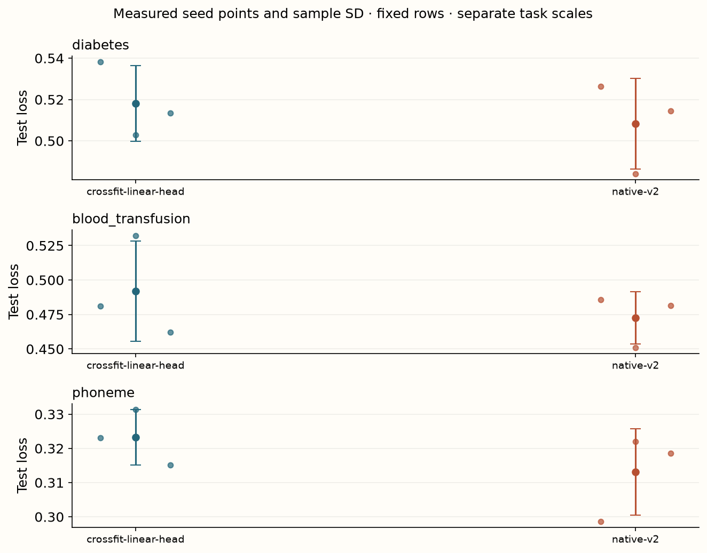

Year 2 · Quarter 3 · Lesson 065
Extract embeddings without their own labels
Understand the computation. Challenge the evidence. Produce a defensible result.
Core reading: 35–50 minutes. Lab: 45–75 minutes plus declared experiment time. This sequence builds the strong single-table baseline and information discipline required to test the relational thesis.
Retrieve before reading
Without notes: Can you treat a labeled-context embedding as an equivalent unlabeled-query embedding? Explain why, then recall a related failure mode from an older lesson.
A useful representation can still have the wrong information¶
Your goal is to extract representations that give a downstream classifier a fair training problem. Read Ye et al., Section 6. The paper distinguishes a labeled support/context row from an unlabeled query row. Their feature values can be identical while their representations differ, because one receives its known label as input.
This matters for heterogeneous tables: an encoder can transform different feature types and distributions into a common hidden space. But a visually separable embedding plot does not prove that a new, unlabeled row will be separable in the same way. If training embeddings already contain their own labels, a linear classifier may learn to read a channel that disappears at inference. This is an information-role mismatch, not merely a scaling problem.
The same encoder can produce representations with different information¶
An embedding is a vector produced by some computation from some inputs. Its usefulness cannot be judged independently of those inputs. In a label-conditioned in-context model, a row represented as labeled context can receive information unavailable when that same row is represented as an unlabeled query.
Write a query embedding as zᵢ=gθ(xᵢ;D_context). The semicolon emphasizes that context is an additional input. If row i and its label yᵢ are included in that context, the representation may contain a route from its own target. A downstream classifier can exploit that route even if the embedding extraction code never explicitly concatenates yᵢ to the final vector.
This is why excellent linear separability can be misleading. A representation that encodes the answer is easy to classify. The relevant question is whether the answer would be available when predicting a new row. The information role of the token matters as much as the layer from which it is extracted.
The local experiment uses held-out query embeddings from a frozen pretrained v2 encoder. It then trains a separate linear head. This tests whether those representations are useful under a legal extraction protocol. It does not claim that every representation exposed by the model has the same semantics or that the final layer is the best layer for transfer.
Distinguish encoder fitting from encoder conditioning¶
Frozen neural weights do not make every downstream representation independent of labels. Context labels can alter activations without changing parameters. A leakage audit must examine both parameter fitting and forward-pass inputs. This is a general lesson for retrieval, in-context learning and any model with an external labeled memory.
Trace the label route¶
Imagine two rows with identical feature vector x and opposite labels. A context representation of the form encode(x)+label_embedding(y) can distinguish them perfectly. At prediction time, both rows have unknown targets, so that direct label difference is absent. A scatter plot of context embeddings may therefore look impressive for a reason unavailable to the deployed predictor.
The appropriate counterfactual is to remove a row's label while extracting that row's representation. In the reduced PFN, the embedding function receives labeled context and separate query features. It has no query-target argument. In the official v2 API, use the query/test representation route and inspect the exact package version; get_embeddings(..., data_source='train') and data_source='test' describe different information roles.

A feature can leak through several intermediate operations¶
Suppose a context token begins with an encoded feature vector plus an encoded target. Attention and feed-forward layers transform that token. The final embedding may no longer visibly resemble the target encoding, but the causal route remains. A nonlinear transformation does not erase information merely because it makes the representation hard to interpret coordinate by coordinate.
To test self-label sensitivity, keep features and all other context entries fixed, change the row's own label where the API permits that role and inspect the embedding. A change establishes a route from that label under this intervention. No change in one fixture does not prove that no route exists for all inputs.
For legal query extraction, the row's own target should enter neither its query-label representation nor the context used to encode it. Other training rows' labels remain legitimate context. The distinction is identity-based, so duplicate feature values from distinct eligible rows need not be removed simply because they look identical.
Layer choice creates another adaptive decision. If you inspect test performance from ten layers and report the best, test has selected the representation. Layer and head regularization should be selected using the declared training/validation process. The local final-layer experiment deliberately has a narrower scope than a paper comparison that selects intermediate layers.
An accessible plot should label the extraction role and layer, not only the model name. “TabPFN embeddings” is too coarse to tell the reader whether the points were legal query representations or labeled-context states.
Cross-fit the representation¶
Partition the outer training rows into K folds. For each fold, use the other K−1 folds as labeled context and extract the held-out fold as unlabeled queries. Scatter the representations back into their original row order. Every training row receives one query-role vector. Fit the downstream head on those vectors and the ordinary training targets. Labels can train the head; they must not have entered each row's own extracted representation.
For rows [0,1,2,3] with folds [0,1,0,1], context [1,3] generates representations for queries [0,2], then context [0,2] generates [1,3]. Concatenating the two outputs without restoring row order would pair embeddings with the wrong labels while preserving array shape. Your CHECK tests both context exclusion and scatter alignment.
Cross-fitting the backbone is not sufficient to make the head's training score an unbiased estimate. The head still fits those targets. Select its hyperparameters on outer validation data and evaluate it on outer test data. Any feature-layer selection, context-size choice or concatenation strategy also consumes validation information.
Construct one honest embedding for every training row¶
Partition outer training rows into K folds. For fold k, use the other K−1 folds as labeled context and encode fold k as unlabeled queries. Place each resulting vector back into its original row position. At the end, every training row has an embedding made without its own target in the encoder inputs.
For row IDs [0,1,2,3] with folds [0,1,0,1], the first query batch might contain IDs [0,2] and the second [1,3]. Concatenating their embeddings gives order [0,2,1,3]. Pairing that array with targets in order [0,1,2,3] is wrong. Scatter by original index to restore [0,1,2,3].
The embedding matrix must have shape N×D, consistent width across folds and exactly one write per row. Reject a one-fold design: excluding the only fold leaves no context. Validate fold IDs, output shape and finite values rather than trusting a callback solely because it returned an array.
The downstream head trains on the restored embeddings and original training labels. This use of labels is allowed: they are now supervised targets for the head. Cross-fitting protects how the head's input features were produced, not a prohibition on supervised learning.
Fold contexts differ, so rows can have representations conditioned on slightly different memories. A new test row also needs a declared context policy. The local protocol averages its embeddings across the saved fold contexts before applying the frozen head. This is a choice to audit, not an automatic property of cross-fitting.
Averaging embeddings and averaging predictions differ¶
For a linear logit head wᵀz+b, the logit of the mean embedding equals the mean of logits. Applying a sigmoid or softmax afterward is nonlinear, so the resulting probability generally differs from averaging per-context probabilities. State where averaging occurs and keep that position fixed across validation and test.
Fold count also changes the representation's context¶
With N training rows and K equal folds, each OOF embedding reads roughly N(K−1)/K labeled context rows. At K=2 that is half the training data; at K=5 it is four fifths. Increasing K can make each context closer in size to the full training set, while requiring more encoder calls or context preparations.
This differs from a conventional fixed feature extractor whose output is independent of the other training examples. Here the fold design changes the representation function's input memory. A gain from increasing K can reflect richer context as well as changes in the head's feature distribution.
The test policy should account for this. Encoding test rows against the entire training set gives a larger context than any OOF training embedding saw. Averaging embeddings across the saved fold contexts instead preserves the context-size regime more closely, but introduces multiple inference views and their cost. Neither choice is automatically optimal.
Treat fold count and test-context policy as declared procedure settings. If you compare them, select using validation and hold test rows fixed. Record preparation time as well as prediction time, since repeated contexts can dominate the apparent simplicity of a linear head.
Model architecture: a pretrained encoder and a learned head¶
Lesson 065 / architecture study
Query embeddings · hide the right labels
Trace this: How can a supervised head train on labels that the encoder was forbidden to see?
The forward path
- Partition training rowsPreserve row IDs and assign K folds.
N rows → fold IDs - Encode each held-out foldFrozen pretrained encoder gets other folds as labeled context; held-out rows are unlabeled queries.
fold queries → fold × D - Restore order and train headScatter embeddings to original rows; fit scaler and logistic head on (Z,y).
Z: N × D - Evaluate with frozen headAverage test embeddings over declared fold contexts; test labels score only.
test × D → probabilities
Inside the key operation
One row has two distinct label roles
| stage ↓ | encoder context | encoder query | head target |
|---|---|---|---|
| row in A | absent | hidden | yᵢ allowed |
| rows B+C | labels | not queried | their own OOF y |
The row’s target is hidden while constructing its representation, then used as ordinary supervised head-training data.
Variant & evidence. Frozen historical v2 encoder plus local cross-fitted linear head. The final-layer local protocol differs from the paper’s intermediate-layer selection experiment.
The end-to-end route is: fixed pretrained v2 weights → fold-specific labeled contexts → query-role hidden vectors → training-fitted standardization → logistic regression → class probabilities. A logistic head maps a hidden vector h to a logit w·h+b; sigmoid converts it to a binary probability. L2 regularization limits coefficient magnitude, with its strength selected on validation.
The author experiment uses three folds, final-layer vectors and a validation-selected head. Validation and test representations are averaged over the three context-specific encoders. This is a declared approximation: the head's training vectors each came from one complementary context, whereas its evaluation vectors average several contexts. The paper uses ten folds and studies intermediate-layer choices and combinations on 29 tasks. Our result does not reproduce that table.
Inspect separability without assuming causality¶
The lab measures a query-role linear head against native v2 predictions on diabetes, blood transfusion and phoneme with three seeds and identical outer rows. A small gap can show that the final hidden space supports a useful linear decision rule under this extraction protocol. It does not show that v2 internally reasons linearly, that those coordinates are causally meaningful, or that the head will retain its advantage under shift.

Measured interpretation. The native v2 predictor has lower seed-mean loss than the final-layer cross-fitted linear head on all three tasks here. The head remains a valid representation experiment; this result does not reproduce the paper's selected intermediate-layer and 29-task comparison. A clear failed gain is preferable to asserting the paper's outcome for a different protocol.
Inspect the numerical evidence table
| mean | std | ||
|---|---|---|---|
| dataset | arm | ||
| blood_transfusion | crossfit-linear-head | 0.4919 | 0.0362 |
| native-v2 | 0.4726 | 0.0190 | |
| diabetes | crossfit-linear-head | 0.5181 | 0.0182 |
| native-v2 | 0.5083 | 0.0219 | |
| phoneme | crossfit-linear-head | 0.3232 | 0.0081 |
| native-v2 | 0.3131 | 0.0127 |
For an exploratory embedding visualization, fit PCA on training representations only, then transform validation/test vectors. PCA chooses directions of maximum variance; the first two components need not preserve the directions important for classification. Keep the projection and its fitting population fixed when comparing label-role interventions, or the changing display can conceal the effect you meant to inspect.
A probe measures accessible information under a chosen readout¶
A linear probe asks whether a linear decision rule can use the representation effectively under the available sample size and regularization. Poor probe performance does not prove that the embedding contains no target information; useful information may require a nonlinear readout or may be hard to estimate from few rows.
Conversely, good probe performance does not establish that the representation discovered the causal structure of the task. It can reflect predictive correlations, context-label information or artifacts. The probe's value is a controlled measurement with an explicit information boundary.
Fit any embedding scaler on head-training embeddings, then apply it to validation and test. Selecting regularization on validation is another fitting stage to record. The frozen encoder, fitted scaler and fitted head together form the deployed predictor.
Two-dimensional plots discard information. PCA emphasizes high-variance directions; nonlinear projections can distort global distances and visual cluster separation. Use plots to generate hypotheses and inspect failures, then evaluate the head on held-out rows. A visually clean cluster picture is not a substitute for a legal predictive comparison.
Accept a failed improvement as useful evidence¶
The local final-layer cross-fitted head did not beat the native predictor on the measured task means. That does not invalidate the extraction protocol. It says that this representation/readout/context policy was not a better predictor under the local comparison.
A follow-up could compare prespecified intermediate layers, a nonlinear head or a different context policy, each with proper validation. Change one component at a time if the goal is to understand the failure. The exit artifact should preserve fold IDs, extraction role, layer identity, head settings and paired scores, then explain why the measured result does or does not answer the paper's broader representation claim.
Exit: prove the information boundary¶
Submit original row IDs, fold membership, embedding shapes, head selection results and native-versus-head test losses. Demonstrate that changing a held-out row's target does not change its query-role embedding when context is fixed. Then deliberately build an own-label context representation on a tiny fixture and explain why its apparent separability is misleading.
For the relational bridge, ask the same question of a row encoder: which related labels were available when this row representation was built? Point-in-time correctness must hold inside representation construction, not only in the final train/test split. A classifier cannot undo leaked information that an encoder has already placed in its inputs.
Run the companion lab
What you will do: Extract cross-fitted query embeddings and fit a linear head. The default exercise uses a random-weight encoder; actual v2 inference is a separate rerun.
crossfit_embeddings: Extract each fold as queries against other-fold context; preserve row order and reject a one-fold design.
Author-reference evidence: Actual v2 cross-fitted representation heads versus native inference on three tasks and three seeds.
Submit: your completed notebook and student-l065-exit.json, plus your written interpretation. CHECK cells give immediate code feedback; paste the EXIT output here for a reasoning review.
Student notebook · Prepared lab · Open in Colab
1 substantive code tasks feed the live experiment, followed by behavioral CHECKs and a written EXIT artifact. The notebook contains the explanation and portable figures so it is teachable independently.
Ask me follow-up questions about any operation, CHECK or conclusion you cannot defend. Paste the EXIT artifact and your explanation for review. Revisit the retrieval question tomorrow and again in a week, before reopening the reference.